這邊分享一下給大家手把手(step by step)介紹一下如何建置Load Testing的專案，內容主要是我之前在公司對QA們做的training material，以英文為主，這邊如果有更好的內容會再把相關內容更新補齊上去。
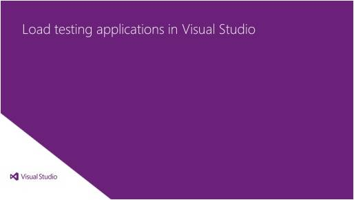
About Load Testing
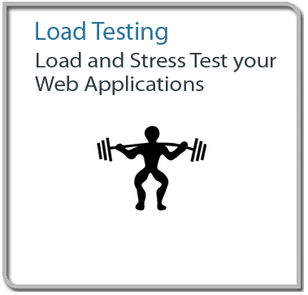
Performance testing
效能測試（Performance testing），效能測試的目標不是要找缺陷（bug），而是要消除瓶頸和替未來的回歸測試（regression tests）建立一個底線，執行效能測試的進行是在一個謹慎控制的量測和分析流程內，理想上軟體是在夠穩定的情況下進行測試，因此測試的過程可以很順利的進行。定義期望組對有意義的效能測試而言是必要的。
- Concurrent user
- 在線的使用者或HTTP連線的期望負荷
- Response time
- 允許的回應時間
Stress testing
壓力測試（Stress testing）,藉由超出系統資源或拿走系統資源（有時被稱為「負面測試」（negative testing））的情況下測試以嘗試中斷系統，主要的目的在確保系統失效和正常地回復。
效能測試需要一個受控制的環境和重覆量測，壓力測試則隨興地引發混亂和不可預測，如：
- 倍數的單位數目(Base Amount)的在線的使用者/HTTP連線數量
- 隨機地關閉和重啟網路上連接到伺服器的交換機/路由器的埠（例如透過SNMP命令）
- 關閉資料庫再開啟
- 在系統執行時重建RAID陣列
- 執行消耗網頁/資料庫伺服器資源（CPU、記憶體、磁碟、網路）的程序並確保程式可以正常執行
Load testing
負載測試(Load testing)是效能測試與調校的一部份，在這個前題下，這意味藉由自動工具不斷地增加負載到系統，對網頁程式而言，負載被定義成在線使用者或HTTP連線。
定義成提供系統所能執行最大工作量下運作測試的流程，負載測試通常被稱為「容量測試」、或「壽命（longevity）/耐力（endurance）測試」。
負載測試的目標:
- 揭露粗略測試的缺陷，如：記憶體控制的缺陷、記憶體洩露（leaks）、緩衝區溢位（buffer overflows）等
- 當效能測試時確保應用程式滿足效能建立的底線，這個是藉由執行回歸測試完成以確保應用程式的特定最大負載。
Test Controller and Test Agent
在Load Testing實際執行當中，你會需要透過VS去建立一個 Load Testing Solution，接著將這Solution透過Test Controller來執行，而Test Controller會去控制它底下的 Test Agent ，分配對應的主機實際去跑你所安排的腳本。
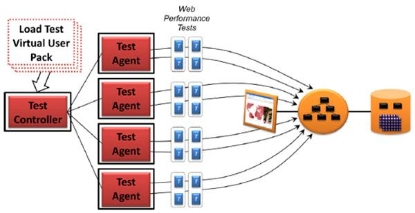
Create Visual Studio Load Testing Solution
整個流程可以分為下列幾個步驟:
- Install Visual Studio 2012(need install SQL Server 2008 Express or higher)
- Create Web Performance and Load Test solution
- Modify and complete Web Performance Test
- Record action by browser
- Remove unnecessary request item
- Add necessary Validation Rule
- Add Data Source and bind data to input
- Add Context Parameters to binding URL
- Configure response time goal, think time and other setting on each request item
- Added Load Test to project and added existing Web Performance Test
- Added New Load Test to project
- Set Test Mix, Browser Mix, Network Mix
- Set Load Pattern
- Configure Run Settings
- Added Counter(optional)
接下來一步步帶大家開始建立第一個Load Testing Solution
Create Web Performance and Load Test solution
開啟VS後選擇File>New>Project>Web Performance and Load Test Project，建立一個新的Load Testing Solution
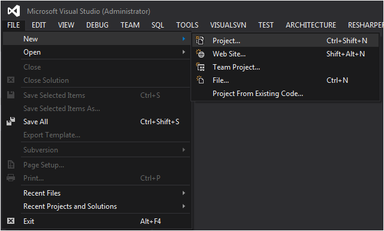
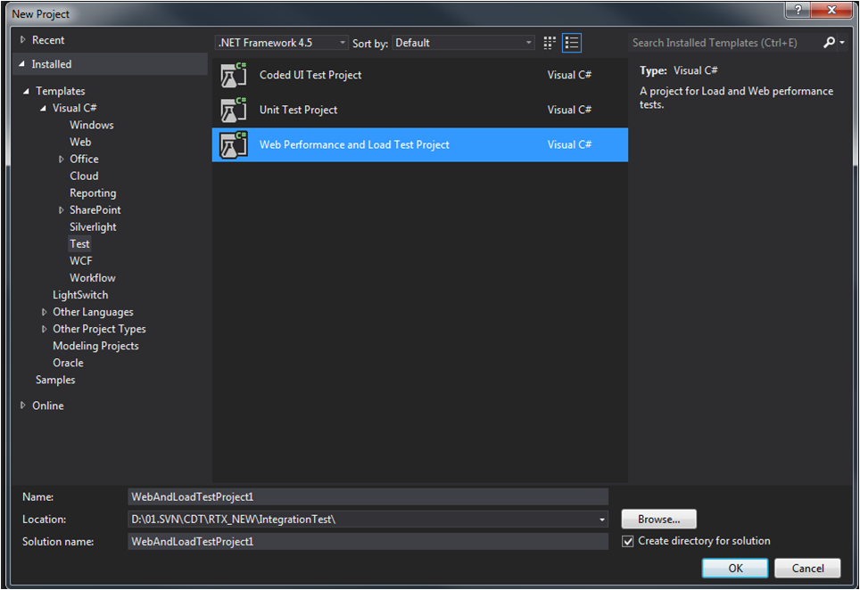
Add Web Performance Testing
建立 Web Performance Testing的方法分為錄製操作行為(record action)與手動撰寫程式兩種方式，但都是透過WebRequest 這個類別來取得每一步的結果與驗證是否完成，進而達成整個Web Performance Test的建立
Create by Wizard(record action)
透過錄製的方式我們可以在不用直接撰寫程式碼的過程當中建立起一系列的操作步驟，而每個步驟我們都可以去儲存Request的回傳結果或是透過一個CSV,DB塞入特定或亂數的Paramaters給Request。當然，我們也可以加上驗證標準來強化定義流程的每一步成功與失敗的準則是什麼(超過三秒沒回應或是沒有給予特定的回傳內容)
step-1
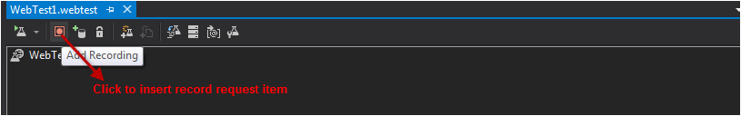
step-2
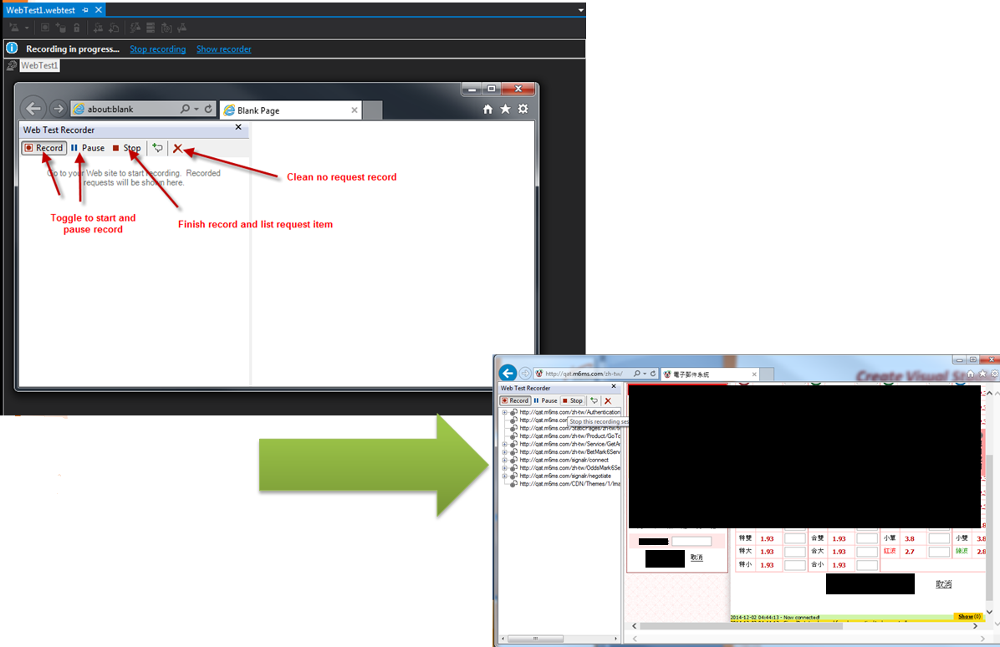
step-3
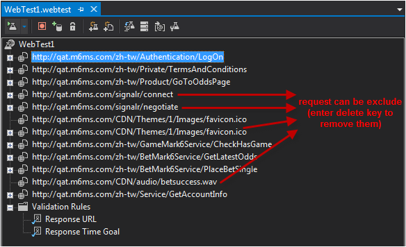
step-4
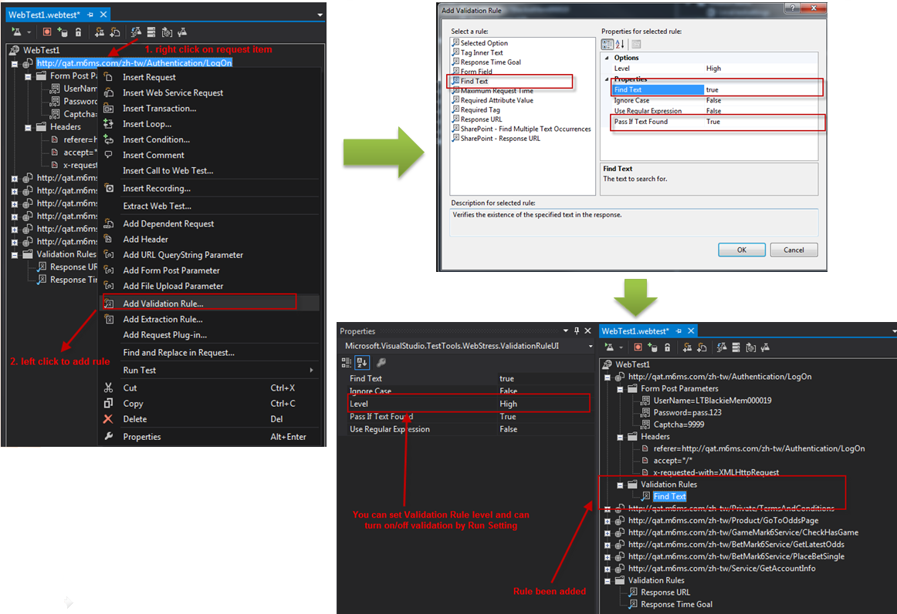
step-5
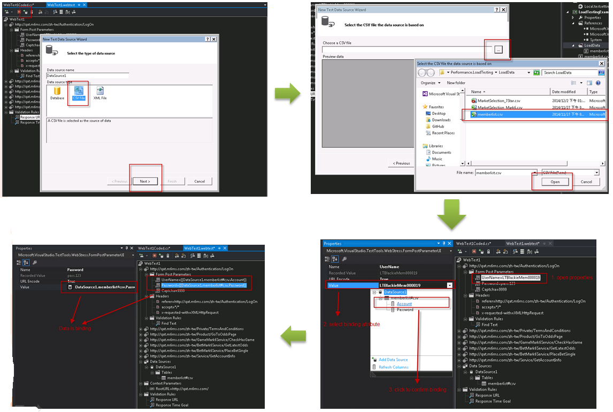
step-6
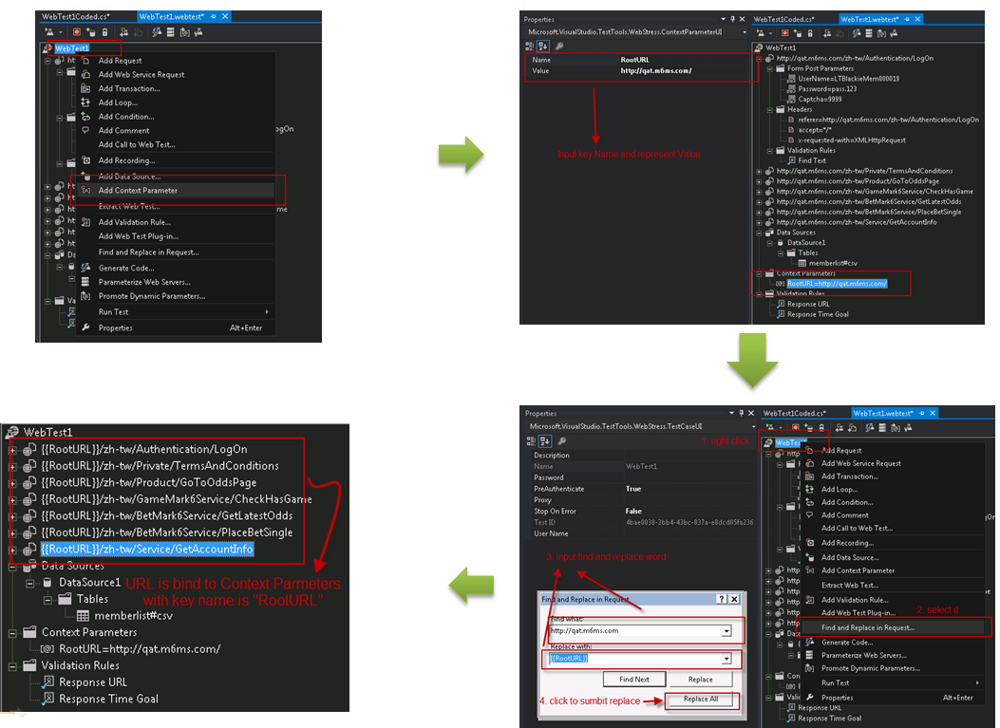
step-7
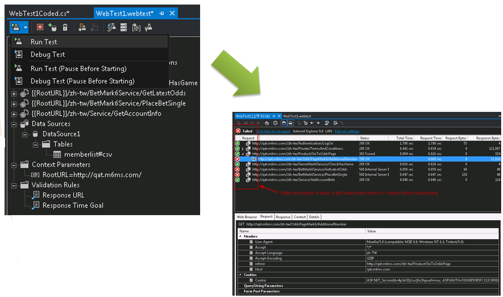
Create by Code
如果我們需要每一步都做到很彈性或是大型的測試腳本，通常我們都會捨棄錄製改用直接撰寫每一個WebRequest的內容來達到更多的彈性需求。
這邊要稍微注意一下，我們可以將錄製的.webtest檔案產生CodeBase的測試腳本(.cs)，但沒辦法將任一個.cs檔案轉回.webtest。
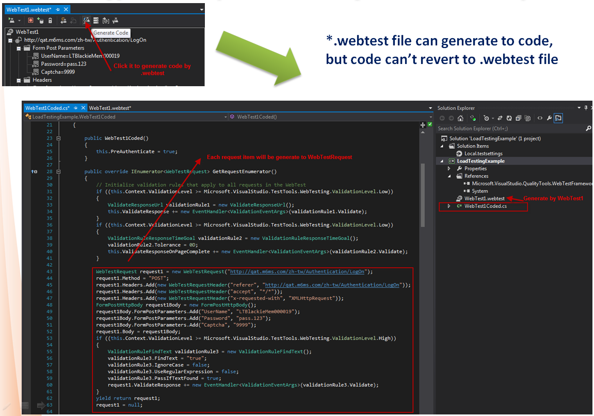
Add Load Testing
接著我們開始準備我們剛剛建立測試的主要檔案(.loadtest)。每一個.loadtest檔案可以在設定包含多個.webtest(或.cs)做為要執行Load Testing時候的腳本。
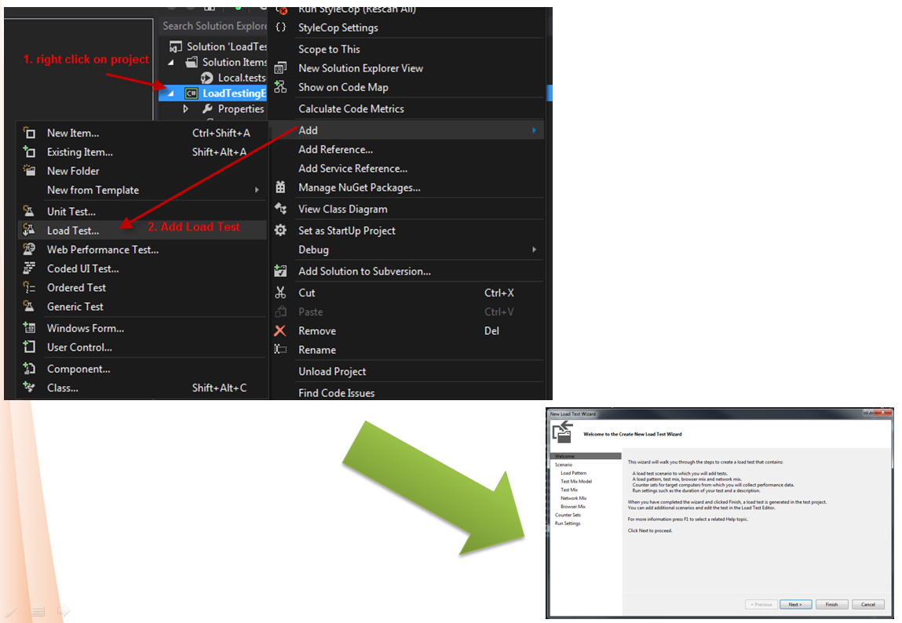
Configure Scenario setting
Once you create .loadtest file, it will added default scenario and you can add more with UI(right click to add).MSDN:Load Test Scenario Properties
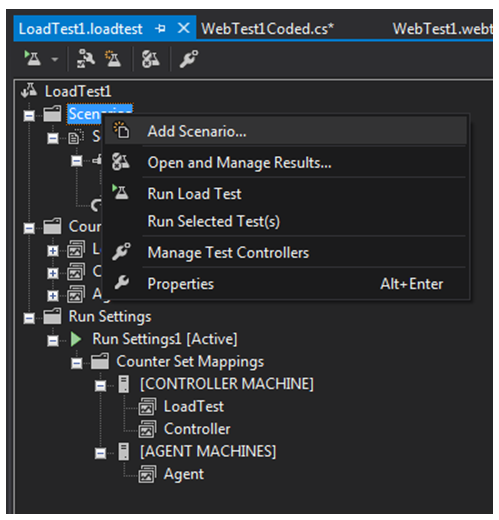
STEP-1:
- Think times are used to simulate human behavior that causes people to wait between interactions with a Web site.
- The think profile is a setting that applies to a scenario in a load test. The setting determines whether the think times that are saved in the individual Web performance tests are used during the load test.
If you want to use think times in some Web performance tests but not in others, you must place them in different scenarios.

MSDN:Editing Think Times to Simulate Website Human Interaction Delays in Load Tests Scenarios
STEP-2:
The load pattern properties specify how the simulated user load is adjusted during a load test. Visual Studio Ultimate provides three built-in load patterns: constant, step, and goal-based.
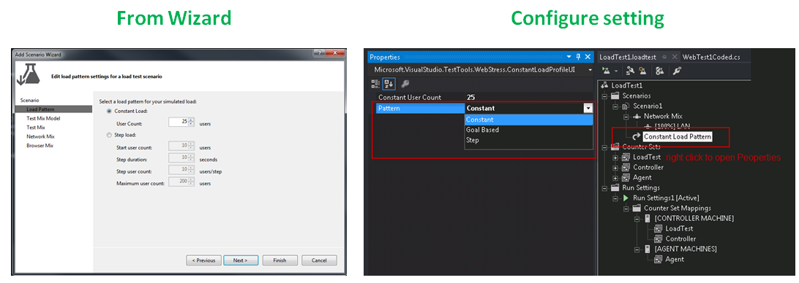
STEP-3:
Specifies the test mix model that is used for the load test.
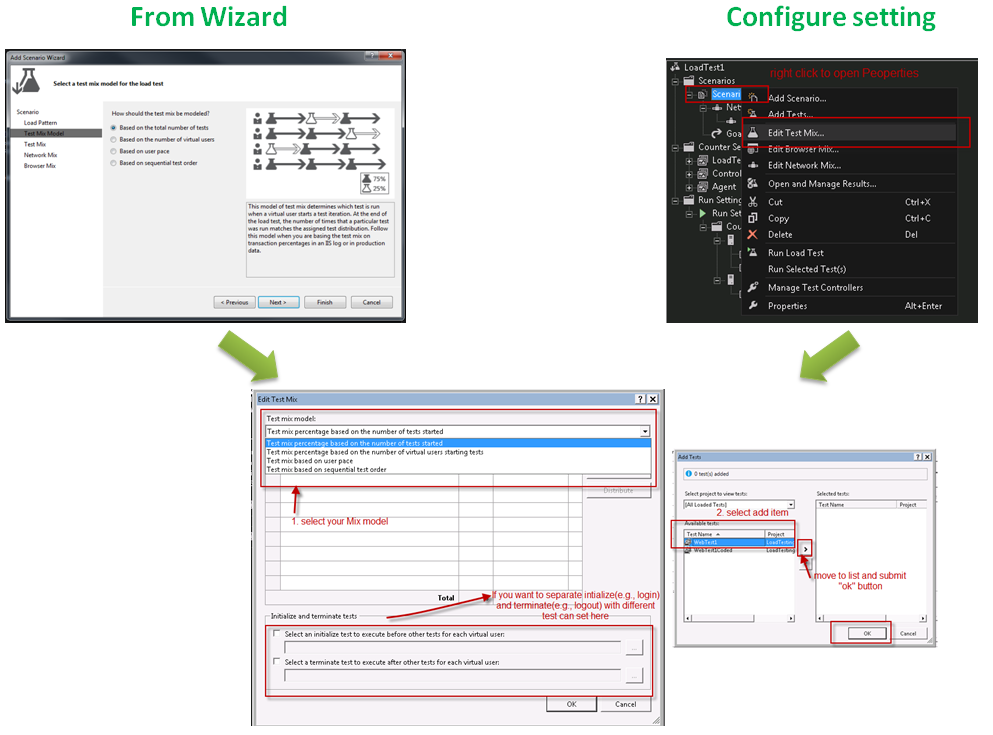
MSDN:Editing the Test Mix to Specify Which Web Browsers Types in a Load Test Scenario
MSDN:Editing Text Mix. Models to Specify the Probability of a Virtual User Running a Test
STEP-4:
Specifies the network mix for the load test. You can specify which network types to include and their load distribution.
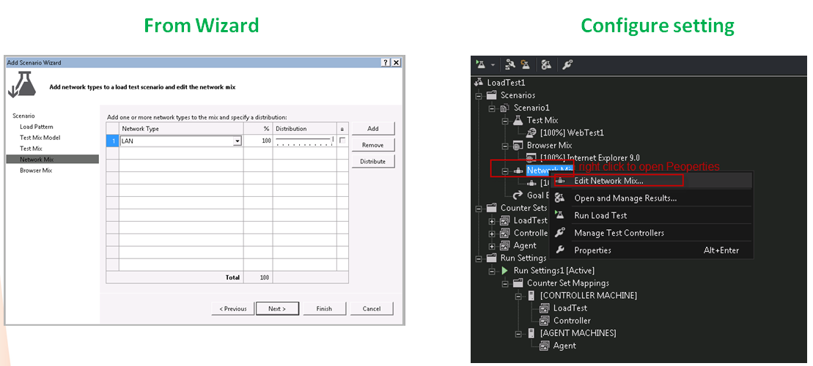
MSDN:Specifying Virtual Network Types in a Load Test Scenario
STEP-5:
Specifies the Web browser mix for the load test. You can specify different Web browser types and their load distribution.
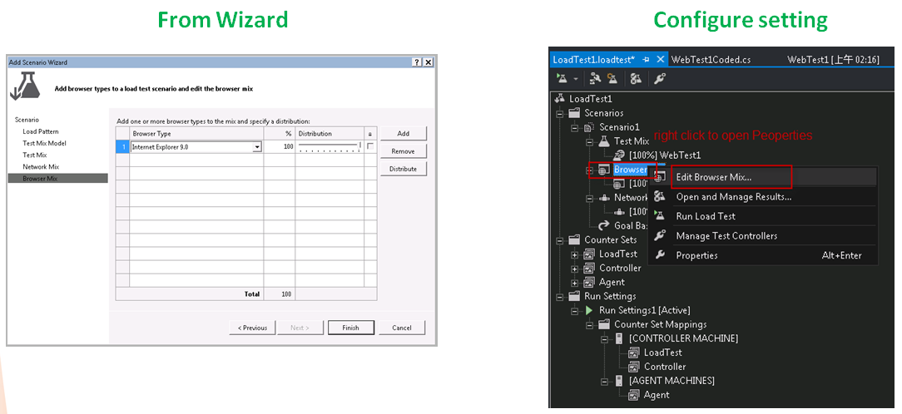
MSDN:Editing the Test Mix to Specify Which Web Browsers Types in a Load Test Scenario
Configuration Run setting
Open results of recently run tests
- From the VIEW menu>Windows > Test Results> Select Run list>choose the test run you want to open or choose Manage test runs to browse for a test from the Test Runs window.
- (Optional) In the Result list, right-click a test and choose View Results to see more - information about that particular test.
- (Optional) To view test result details, including any data and diagnostic adapter attachments, choose Run Details in the toolbar.
- (Optional) If you have Office excel 2010 or later, you can generate with excel add-in(guide)
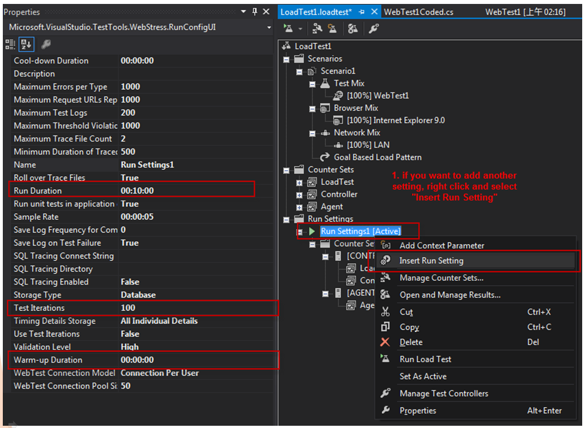
Open Load Testing Report
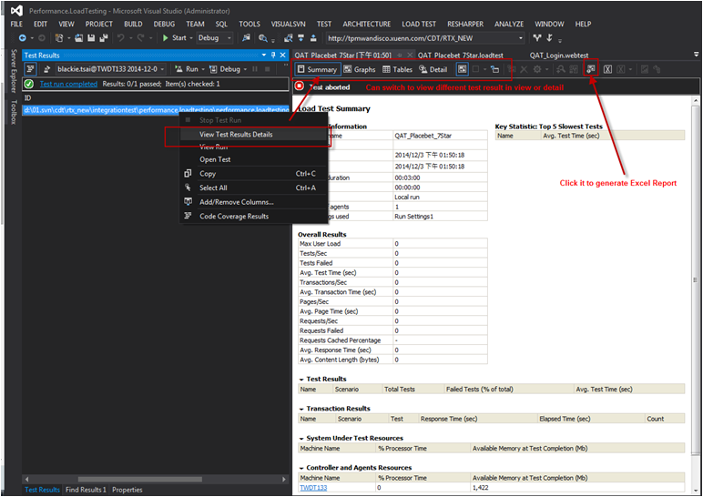
Tips for setting
Tip 1 – How to set User Load with gradually increased
- Set it on .loadtest > Load Pattern
For example, to see how your server or servers perform as the user load increasing to 2,000 users, you might run a 10-hour load test using a step load pattern with the following properties:
- Initial User Count: 100
- Maximum User Count: 2000
- Step Duration (seconds): 1800
- Step Ramp Time (seconds): 20
- Step User Count: 100
These settings have the load test running for 30 minutes (1800 seconds) at user loads of 100, 200, 300, up to 2,000 users.
How to: Specify the Step Ramp Time Property for a Step Load Pattern
Tip 2 – How to binding data with CSV, DB or constant
- Using double curly brackets to binding data to your content
- CSV or DB
- Add data source and select data type
- Select “properties”
- Set the property to the correct data source field, value is like {{DataSource1.Filename#csv.ColumnTitle}}
- Confirm the property binding
- Constant
- Using Content Text directly
MSDN: Walkthrough: Adding Data Binding to a Web Performance Test (CSV File)
- Using Content Text directly
- CSV or DB
Tip 3 – How to pass response data to next request
- Using Context parameters to store data and binding it to next.
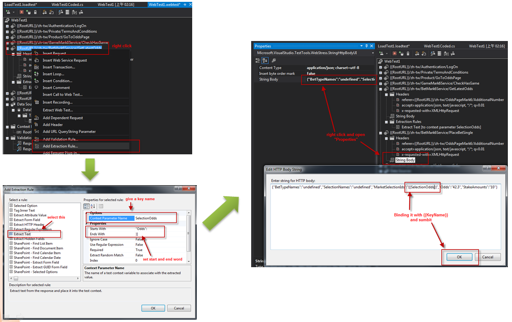
Tip 4 – How to make binding data amd pick up with random
- If your source have grant data and you want pick up is random, you can set it on data source directly.
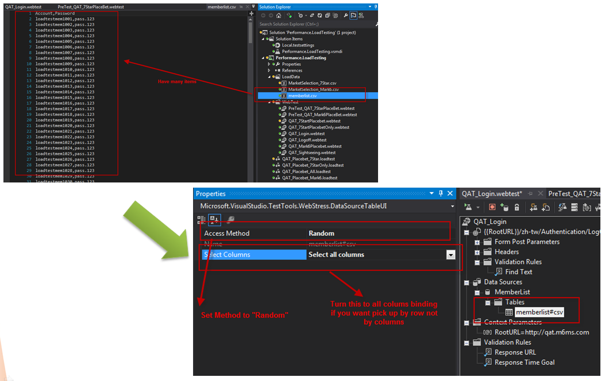
Tips 5 – Binding Data Source with CSV file but execute with Error
- If your Data Source binding is setting correct by execute show with can found existing Context Parameters, it might Visual Studio known bug with binding data.
- Solution is update your .csv file with another title to make binding with correct encoding.
- You can confirm encoding is correct by generate code on .webtest file.
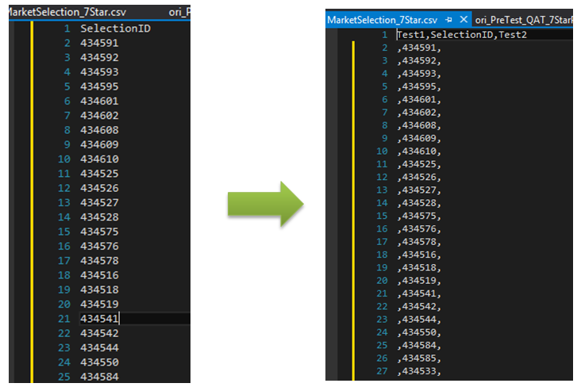
One more thing about Load Testing
Cowork with Test Controller and Test Agent
一開始我們有稍微提到Test Controller 與 Test Agent 的關係，現在我們進一步的來看看實際上Test Controller怎麼去控制Test Agent來完成Load Testing.
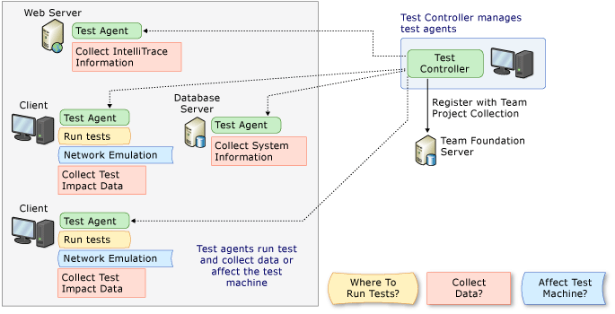
從上圖你可以看到其實Test Controller就是指派它底下的每一個Test Agent去Run Tests然後將資料取得回來放置Test controller這邊收集。
如果想要自己動手做，需要詳細的環境建置教學可以參考保哥的使用 Visual Studio 2010 Ultimate 及 Agent 進行負載壓力測試
Remote Controller to doing Load Testing
實務上，在做Load Testing的時候通常我們都會針對類似實際運行架構(production environment)進行測試，以確保測試出來的數值是符合真實情況的，所以通常我們的Load Testing Controller 與 Test Agent我們會獨立建立一個Test Rig來分隔實際需要測試的環境。而我們可透過遠端(remote)或直接到Load Testing Controller那台執行我們的腳本。
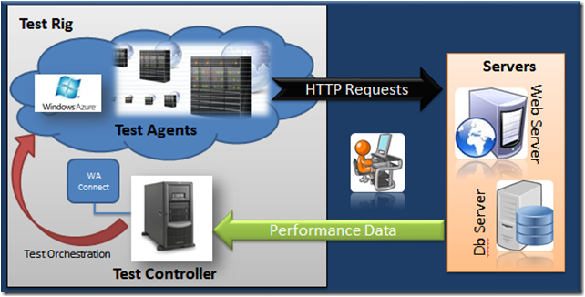
Load Testing in the Cloud (Windows Azure)
通常一台Test Agent我們格別放在一台虛擬或實體的主機(server)上，而每台Test Agent因為硬體環境的不同，我們會讓他發送250-1000的測試量，假設你今天需要做一個同時在線人數2000人的測試，每一台你預估可以發送500人，那你會需要四台Test Agent。
以上面的例子來看如果想要做Load Testing但沒有這麼多台主機建立Test Controller and Test Agent也沒關係，你可以直接使用Windows Azure來建立，而且using on-demand, 你隨時可以開啟或提用你的這些主機，透過最符合CP值的方式建立需要花費昂貴費用才能建立的環境。
Graphic
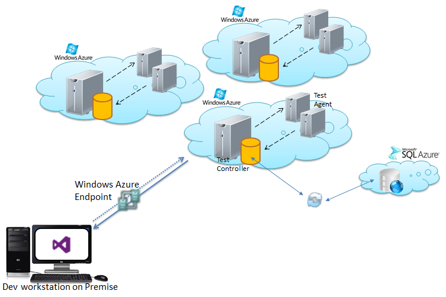
Flow
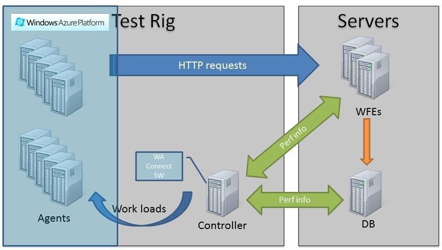
Hands on Lab
如果對Load Testing有興趣想要實際上手玩玩的話建議來這邊實作一下歐，這個Lab連Sample site都會給你所以不用擔心沒有網站可以測試啦!
- Download sample.
- From the Solution Explorer, open SampleWebTest.webtest
- Select the URL listed in SampleWebTest.webtest file.
- Go to the properties list and update the property labelled ‘Url’ to your app’s/website’s URL.
5.From the team explorer, please connect to your Visual Studio Online account(Register here). - Open the SampleLoadTest.loadtest file. From the ‘Load Test’ menu, select ‘Run’ -> ‘Selected Test’
- The Load test from the cloud will now start and show you graphs of how your application is performing during the load test.
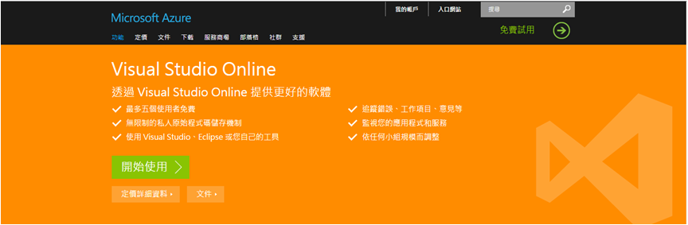
搭配上面的Lab，這邊額外推薦大家使用visual-studio-online
，優點如下摟:
- 5 FREE Basic user licenses
- FREE work item tracking for all users
- FREE 60 minutes/month of build
- FREE 15K virtual user minutes/month of load testing
- PREVIEW application monitoring and analytics
結論
執行Load Testing前注意，除了每次都要記得做初始化(IIS reset, System clean等，避免被其他變因影響)，因為這樣的壓力測試其實就是對系統做一次類似來說DDOS的攻擊，所以如果待測網站有類似阻擋DDOS攻擊的防火牆或是WAF，千萬要記得關掉以免影響測試結果。
另外，測試的結果跟你本身錄製的測試腳本有絕大的關係，通常測試結果太過樂觀或悲觀有很大的可能是你根本就搞錯你的測試腳本了，所以測試腳本非常重要。
個人這邊要額外提到一個重點Load Testing本身應該要先建立在有可相信的Web Performance Test，因為這樣才可以先定義什麼叫測試成功與失敗，各衡量指標才會有實際的判別方式。
而初期的測試應該要盡量的單一面向且明確的去定義你所希望測試的項目，例如:我想測試一下我的網站能不能成功上線，這是一個非常籠統且沒有人知道妳想要什麼的一個測試目標。
如果我們將內容換成:我想測試一下我的網站在1000個concurrent user同時使用的情況下，是否正常，這好想比上一個好多了，因為我們說出了一個明確的成功指標 “1000人”，但其實我們還是不知道要測什麼行為。
如果我們再將內容做些更改:我想測試一下我的網站在1000個concurrent user同時登入且使用A功能的情況下能否達成全部三秒內回應且沒有任何Exception的發生，這樣我們就會更明確地去組成一個簡單的Web Performance Test。
記住，Load Testing可由多個Web Performance Test組成，所以不用一個包山包海的Test，猜開成多個透過設定不同的混和或序列執行模式可以更加有彈性的建立符合實際情況的Load Testing，如此才能真實的反應你所想要知道的訊息。